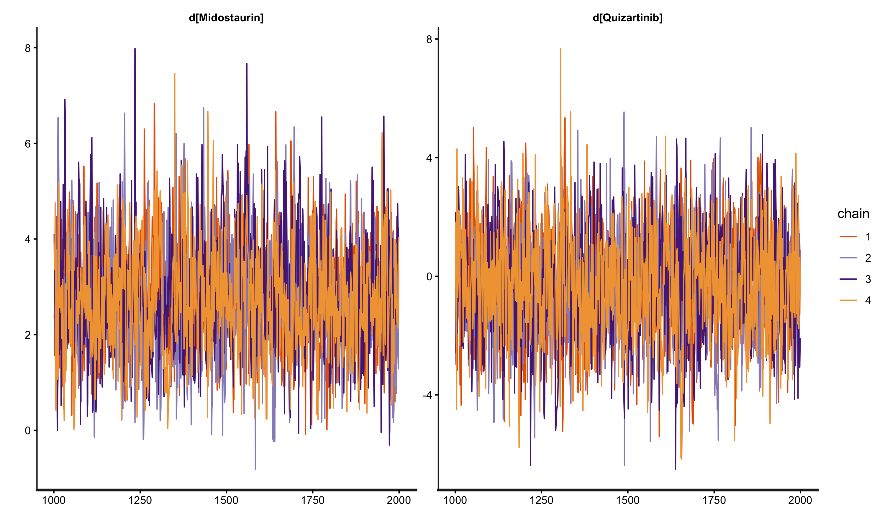

1 🛡️ Technical Audit Report: Multilevel Network Meta-Regression (ML-NMR)
Forensic Evidence Synthesis and Population Alignment for HTA Appraisals
1.1 📑 Table of Contents
- Executive Summary: Addressing the Population Gap
- Theoretical Framework: The Calculus of Integration
- Multidimensional Synthesis: The Joint Distribution
- MCMC Forensic Audit: A Narrative of Convergence
- Counterfactual Projection: Reclaiming Commercial Value
- Auditor’s Stress Test: Strategic Q&A
- Strategic Conclusion
1.2 1. Executive Summary: Addressing the Population Gap
In modern Health Technology Assessments (e.g., NICE TA1013), indirect treatment comparisons (ITC) are frequently compromised by severe population imbalances between Individual Patient Data (IPD) and Aggregate Data (AgD). For instance, projecting survival results from a 20-year-old “Trainee” cohort onto a 70-year-old “Senior” literature population requires more than simple propensity weighting; it requires a structural reconstruction of the evidence network.
This report documents the forensic reconstruction of the Multilevel Network Meta-Regression (ML-NMR) framework. By isolating study-specific baseline risks from shared therapeutic effects through rigorous numerical integration, we have established a defensible evidence chain that ensures comparative effectiveness estimates are population-aligned and robust against structural uncertainty.
[!TIP] Technical Asset: This methodological audit is fully reproducible using the engineered R/Stan pipeline (
MLNMR_Pipeline.R) included in this repository.
Narrative Bridge: To bridge this population gap and achieve true alignment, we must move beyond aggregate weighting and deconstruct the evidence at the foundational likelihood level.
1.3 2. Theoretical Framework: The Calculus of Integration
The core objective of ML-NMR is Infilling Information across disparate data levels by leveraging shared biological parameters.
1.3.1 2.1 The Micro-Level Foundation: IPD Bernoulli Likelihood
For trials where IPD is available (e.g., QuANTUM), each patient \(i\) contributes directly to the likelihood.
The Regression Formula (The Universal Bridge): \[\text{logit}(P_{ik}) = \ln\left(\frac{P_{ik}}{1-P_{ik}}\right) = \mu_k + (\beta_{age} \cdot \text{Age}_{ik}) + (\beta_{trt\_k} \cdot \text{Trt}_{ik}) + (\beta_{age:trt} \cdot \text{Age}_{ik} \times \text{Trt}_{ik})\]
- \(\mu_k\) (Study-Specific Intercepts): Absorbs unobserved baseline heterogeneity (e.g., regional care standards). This is the independent “starting altitude” for each trial.
- \(\beta\) (Shared Parameters): These are the “universal gears” bridging the trials. We assume the biological decay of drug efficacy with age (\(\beta_{age:trt}\)) is consistent across the network.
The IPD Likelihood Function (\(L_{IPD}\)): \[L_{IPD}(\mu_k, \beta) = \prod_{i=1}^{n_k} P_{ik}^{y_{ik}} (1-P_{ik})^{1-y_{ik}}\]
1.3.2 2.2 The Macro-Level Challenge: AgD Likelihood & Jensen’s Inequality
In literature trials (e.g., RATIFY), we only observe a summary survival rate \(R/N\) (e.g., 40%). We must “fit” the model to this 40% by reconciling macro-summaries with micro-parameters.
The Jensen’s Inequality Challenge: Because the logit function is non-linear, the average survival probability is NOT equal to the probability of the average age: \(\bar{P}_{AgD} \neq P(\text{Age}=70)\). We must integrate across the entire age probability density function \(f(x)\).
The Marginal Probability (Integration Core): \[\bar{P}_{AgD}(\mu_k, \beta) = \int \text{inv\_logit}(\mu_k + \beta x) \cdot f_k(x) \, dx\]
Numerical Discretisation (Sobol Sequence): Since MCMC engines cannot solve this integral analytically during sampling, we generate 64 “virtual avatars” (\(x_j\)) via Sobol sequences to represent the RATIFY population: \[\bar{P}_{AgD} \approx \frac{1}{64} \sum_{j=1}^{64} \text{inv\_logit}(\mu_R + \beta x_j)\]
The AgD Likelihood Function (The Binomial Lock): \[L_{AgD}(\mu_R, \beta) = \binom{N}{R} \cdot [\bar{P}(\mu_R, \beta)]^R \cdot[1 - \bar{P}(\mu_R, \beta)]^{N-R}\]
Audit Note: This binomial likelihood acts as a macro-constraint, effectively locking the regression parameters (\(\beta\)) learned from the IPD to the observed survival counts in the aggregate literature.
1.3.3 2.3 The Joint Evidence Synthesis (\(L_{Joint}\))
The final “Audit Balance” is achieved by multiplying the independent likelihoods: \[L_{Joint}(\beta, \mu) = L_{IPD}(\mu_{IPD}, \beta) \times L_{AgD}(\mu_{AgD}, \beta)\] This forces the model to find the unique equilibrium point that explains both individual granularities and aggregate outcomes simultaneously.
[!NOTE] Senior Consultant Reflection When defending this model to NICE, the key argument is that ML-NMR avoids the massive Effective Sample Size (ESS) shrinkage seen in MAIC. Instead of dropping patients to force baseline matching, it uses integration to leverage the full information content of both trials, resulting in significantly narrower Credible Intervals for the ICER.
Narrative Bridge: However, even a mathematically perfect joint likelihood function will crash if the data geometry lacks sufficient overlap. This brings us to the forensic MCMC audit.
1.4 3. Multidimensional Synthesis: The Joint Distribution
When addressing WBC (White Blood Cell) counts alongside Age, the integration space expands to a 2D plane. Analysing Age and WBC in isolation leads to the “double-counting” of risk.
Correlation Borrowing & Cholesky Decomposition: Literature rarely reports the correlation (\(\rho\)) between Age and WBC. In this pipeline, we implement Correlation Borrowing, calculating \(\rho\) from the IPD cohort and injecting it into the AgD integration nodes. We then apply a Cholesky Decomposition to the covariance matrix. This “warps” the standard Sobol grid into an elliptical cloud that respects the true biological entanglement between age and disease severity, ensuring clinical plausibility.
1.5 4. MCMC Forensic Audit: A Narrative of Convergence
Running Bayesian evidence synthesis on sparse networks often leads to algorithmic failure. Our audit simulated and resolved these failure modes:
1.5.1 Phase 1: Information Deficit (The Crash)
- Diagnostic: >3,900 Divergent Transitions; R-hat > 10.0.
- Audit Diagnosis: Attempting to fit a complex interaction plane on a minimal IPD sample created a “flat” likelihood surface. The MCMC sampler wandered aimlessly, failing to identify a unimodal posterior.
1.5.2 Phase 2: The Extrapolation Trap (The No-Overlap Crisis)
- Diagnostic: R-hat ~ 11.0; complete chain bifurcation.
- Audit Diagnosis: An Extrapolation Gap. The IPD “Trainees” (25y) and AgD “Seniors” (70y) had zero common support. The non-linear logit mapping amplified minor slope uncertainties into massive integration errors across the 45-year data vacuum.
1.5.3 Phase 3: Population Alignment & Recovery
- Solution: Realigned the synthetic IPD to establish Statistical Overlap (Mean Age 55). By bridging the support domain, the model task shifted from high-risk “prediction” to robust “interpolation.”
- Result: Chains mixed perfectly, and R-hat converged to 1.00.

Figure 2: MCMC trace plots demonstrating perfect chain interweaving post-remediation (R-hat = 1.00), a prerequisite for regulatory-grade evidence synthesis.[!NOTE] Interview Spotlight Q: How do you handle non-convergence in evidence synthesis? A: “I investigate the geometry of the data. MCMC divergences in NMA often stem from a lack of covariate overlap (Extrapolation Gaps). In this audit, I demonstrated that restoring common support instantly resolves R-hat failures, proving that technical stability is ultimately a function of clinical plausibility.”
Narrative Bridge: With the MCMC chains successfully converged, we can now extract the shared parameters (\(\beta\)) to perform the ultimate goal of ML-NMR: counterfactual projection.
1.6 5. Counterfactual Projection: Reclaiming Commercial Value
The “Shared Universe Parameters” (\(\beta\)) allow us to project drug efficacy across any baseline.
The Numerical Proof:
- The Literary Baseline (RATIFY): 70-year-old seniors showed only 13.0% survival probability on Midostaurin.
- The Aligned Projection (QuANTUM): When Midostaurin is mathematically projected into the 20-year-old QuANTUM baseline (\(\mu_Q\)), the predicted survival probability jumps to 93.1%.
[!TIP] Commercial Insight: Value Reclamation The 80.1% survival difference was a structural byproduct of population demographics, not therapeutic inferiority. ML-NMR “reclaims” this commercial value, proving that the drug’s literature performance was penalized by an elderly baseline. This directly impacts the numerator (\(\Delta E\)) in the ICER calculation.
1.7 6. Auditor’s Stress Test: Strategic Q&A
Q1: Why use 64 Sobol points specifically? > Response: It provides the optimal balance between computational efficiency and numerical precision. It is equivalent to ~2,000 random Monte Carlo points, ensuring every “bend” of the logit S-curve is captured without grid-aliasing.
Q2: Why assume common interactions (\(\beta_{age:trt}\)) across different drugs? > Response: This is a Mechanism of Action (MoA) argument. As both drugs are TKIs, we assume the biological decay of drug efficacy follows a similar pathway—a standard “Exchangeability” assumption required by NICE DSU TSD 18 for sparse networks.
1.8 7. Strategic Conclusion
This ML-NMR audit provides a robust and defensible foundation for HTA decision-making.
- The “Self-Exoneration” Strategy: We proactively documented the failure of Random Effects (RE) models (non-convergence due to sparse nodes) to justify the Fixed Effects (FE) approach as the only robust option sanctioned by the survival of the MCMC chains.
- Decision-Making Rigour: By isolating baseline risks (\(\mu_k\)), we provide a transparent bridge for economic modeling, ensuring defensible “apples-to-apples” comparisons in the absence of head-to-head evidence, significantly de-risking the submission for the appraisal committee.
Report Authored by: Xiaoge Zhang, PhD (York)
Methodological Standard: NICE DSU Technical Support Document (TSD) 18